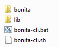

Create administration tools
This page contains an example of how to create tools to administer your Bonita system. The example is developed using Maven, and is a Java program to list the failed tasks, wrapped in a script so that it can be executed in an environment with no window manager.
Getting started
You need to be familiar with building a Maven project with Bonita as a dependency. You also need to be familiar with using the Bonita Engine APIs. If this is not the case, follow this tutorial. The Engine API overview contains a list of the APIs with a short description of each one. For details of the methods available in the Bonita Engine APIs, see the Javadoc.
This example uses the Bonita Engine Java APIs but there is also a REST API.
In this example, the Maven project has the following settings:
- Group Id: org.mycompany.bonita
- Artifact Id: bonita-cli
You must have a running Bonita system. The simplest way to do this is to run a Bonita Tomcat bundle locally. You also need a user: in this example the user has username admin and password secret.
Write a class that lists failed tasks
Bonita provides a client to leverage the Java APIs. This is the easiest starting point for an application, so this is what we will use in the example.
Set up your Maven project with a maven dependency to bonita-client. Then create a class to execute the business logic. In this example, the class is called ListFailedTasksCmd.
It implements Callable<Void>, and calls methods to log in the API, then to execute the business logic, and finally to log out from the API.
public Void call() throws Exception {
login();
try {
printFailedTasks();
} finally {
logout();
}
}
The business logic of this example gets a list of the failed tasks and prints them to standard output. The maximum number of failed activities to retrieve is provided by the class field nbTodisplay. The method printFailedTasks is doing the actual job of searching for activities whose state is FAILED.
TIP: Like for any methods in the API listing elements, the searchActivities method takes paging information to limit the number of elements to retrieve. This prevents clients from retrieving too much data at the same time and filling up the whole memory.
This is a common way to avoid users getting OutOfMemory errors. It is better to make several successive calls to the API than to retrieve too much data.
protected void printFailedTasks() throws BonitaHomeNotSetException,
ServerAPIException, UnknownAPITypeException, SearchException {
ProcessRuntimeAPI taskAPI = (ProcessRuntimeAPI) TenantAPIAccessor.getProcessAPI(session);
SearchOptions failedSearchOptions = new SearchOptionsBuilder(0,nbTodisplay)
.filter(ActivityInstanceSearchDescriptor.STATE_NAME, ActivityStates.FAILED_STATE)
.done();
SearchResult<ActivityInstance> failedTasks = taskAPI.searchActivities(failedSearchOptions);
print(failedTasks);
}
See the complete source code for this class is in ListFailedTasksCmd.java.
Create a main class
Let’s create a CLI.java class that will be the entry point of our application. The CLI will simply delegate to our ListFailedTasksCmd
the responsibility to fetch failed tasks and display them on the standard output. The CLI will take as input parameters the username, password and the maximum number of failed tasks to display.
public static void main(String[] args) {
if(args.length != 3) {
throw new IllegalArgumentException("Usage: you should provide <username> <password> <number of tasks to display>");
}
try {
new ListFailedTasksCmd(args[0], args[1], Integer.parseInt(args[2])).call();
} catch (Exception e) {
e.printStackTrace();
}
}
Prepare packaging
As we have seen, the tool has several dependencies required to be executed. This means that our classes should be packaged along with these dependencies in a single bundle. To do this, build a zip with all the resources that the system will require to run the CLI.
Declare an Assembly
Create an assembly.xml file at the root to describe the final packaging.
<assembly xmlns="http://maven.apache.org/POM/4.0.0" xmlns:xsi="http://www.w3.org/2001/XMLSchema-instance"
xsi:schemaLocation="http://maven.apache.org/POM/4.0.0 http://maven.apache.org/xsd/assembly-1.0.0.xsd">
<id></id>
<formats>
<format>zip</format>
</formats>
<includeBaseDirectory>false</includeBaseDirectory>
<fileSets>
<fileSet>
<outputDirectory>/</outputDirectory>
<directory>src/main/resources</directory>
<includes>
<include>**</include>
</includes>
<fileMode>744</fileMode>
</fileSet>
</fileSets>
<dependencySets>
<dependencySet>
<outputDirectory>/lib</outputDirectory>
</dependencySet>
</dependencySets>
</assembly>
This assembly gathers all the dependencies into a lib folder along with all the content of the src/main/resources before zipping the whole collection. At the end we should get the following structure in a zip:
|-bonita/
|-lib/
|- bonita-cli.jar
|-*.jar
Update the pom.xml file to call the assembly when building the project
<properties>
<zipName>bonita-cli-${project.version}</zipName>
<folderToZip>${project.build.directory}</folderToZip>
</properties>
...
<build>
<plugins>
...
<plugin>
<groupId>org.apache.maven.plugins</groupId>
<artifactId>maven-assembly-plugin</artifactId>
<executions>
<execution>
<id>generate-package</id>
<phase>package</phase>
<goals>
<goal>single</goal>
</goals>
<configuration>
<ignoreDirFormatExtensions>true</ignoreDirFormatExtensions>
<finalName>${zipName}</finalName>
<descriptors>
<descriptor>assembly.xml</descriptor>
</descriptors>
</configuration>
</execution>
</executions>
</plugin>
…
</plugins>
</build>
The maven-assembly-plugin enables us to generate the zip as described in assembly.xml file with the specified zipName, e.g. Bonita-CLI-1.0.0.
Make the bonita-cli.jar executable
In order to launch the expected class, CLI.java, edit the pom.xml and add the following lines. This will create a manifest during the build of the Maven project in the jar file which contains the main class.
<build>
<plugins>
...
<plugin>
<groupId>org.apache.maven.plugins</groupId>
<artifactId>maven-jar-plugin</artifactId>
<version>2.4</version>
<configuration>
<archive>
<manifest>
<addClasspath>true</addClasspath>
<mainClass>org.mycompany.bonita.cli.CLI</mainClass>
</manifest>
</archive>
<excludes>
<exclude>*.bat</exclude>
<exclude>*.sh</exclude>
</excludes>
</configuration>
</plugin>
...
</plugins>
</build>
Build and test
Right click on the project, select Run As > Maven Install. The output Bonita-CLI-1.0.0.zip is located in /target.
Open a console, go to the target folder, and unzip Bonita-CLI-1.0.0.zip. Before executing make sure to configure the bonita client to point the bonita engine by editing ${bonita.home}/engine-client/conf/bonita-client-custom.properties.
For example:
# HTTP
org.bonitasoft.engine.api-type = HTTP
server.url = http://localhost:8080
application.name = bonita
To test our main class, execute the following command:
-
On Linux:
java -jar lib/*.jar admin secret 10 -Dbonita.home=\pwd`/bonita` -
On Windows:
java -Dbonita.home=bonita -jar lib/bonita-cli-1.0.0.jar admin secret 10
These commands are cumbersome, so the next section explains how to create a script to hide the complexity.
Wrap in a Shell script
In the resources folder of your project, create a new file bonita-cli.sh or bonita-cli.bat:
bonita-cli.sh:
#!/bin/sh
java -Dbonita.home=\`pwd\`/bonita -jar lib/bonita-cli-*.jar $*
bonita-cli.bat:
java -Dbonita.home=bonita -jar lib/bonita-cli-1.0.0.jar %*
Build the whole project again. When the build completes, the zip file should contain the following structure:

Run the appropriate script:
-
On Linux:
./bonita-cli.sh admin secret 10 -
On Windows:
bonita-cli.bat admin secret 10
Here is an example of output:
List of activities:(1 item(s) found)
State On id Name
failed 16:11 100 Review Git Pull Request from: N Chabanoles
Complete code example
package org.mycompany.bonita.cli.cmd;
import java.text.SimpleDateFormat;
import java.util.List;
import java.util.concurrent.Callable;
import org.bonitasoft.engine.api.ProcessRuntimeAPI;
import org.bonitasoft.engine.api.TenantAPIAccessor;
import org.bonitasoft.engine.bpm.flownode.ActivityInstance;
import org.bonitasoft.engine.bpm.flownode.ActivityInstanceSearchDescriptor;
import org.bonitasoft.engine.bpm.flownode.ActivityStates;
import org.bonitasoft.engine.exception.BonitaHomeNotSetException;
import org.bonitasoft.engine.exception.SearchException;
import org.bonitasoft.engine.exception.ServerAPIException;
import org.bonitasoft.engine.exception.UnknownAPITypeException;
import org.bonitasoft.engine.platform.LoginException;
import org.bonitasoft.engine.search.SearchOptions;
import org.bonitasoft.engine.search.SearchOptionsBuilder;
import org.bonitasoft.engine.search.SearchResult;
import org.bonitasoft.engine.session.APISession;
/**
*
*/
/**
* @author John Doe
*
*/
public class ListFailedTasksCmd implements Callable<Void> {
private static final String ROW_SEPARATOR = "\n";
private static final String COL_SEPARATOR = "\t";
private String userName;
private String password;
private APISession session;
private int nbTodisplay;
public ListFailedTasksCmd(String user, String pass, int nbTodisplay) {
userName = user;
password = pass;
this.nbTodisplay = nbTodisplay;
}
public Void call() throws Exception {
login();
try {
printFailedTasks();
} finally {
logout();
}
return null;
}
protected void printFailedTasks() throws BonitaHomeNotSetException,
ServerAPIException, UnknownAPITypeException, SearchException {
ProcessRuntimeAPI taskAPI = (ProcessRuntimeAPI) TenantAPIAccessor
.getProcessAPI(session);
SearchOptions failedSearchOptions = new SearchOptionsBuilder(0,
nbTodisplay).filter(
ActivityInstanceSearchDescriptor.STATE_NAME,
ActivityStates.FAILED_STATE).done();
SearchResult<ActivityInstance> failedTasks = taskAPI
.searchActivities(failedSearchOptions);
print(failedTasks);
}
protected void print(SearchResult<ActivityInstance> failedTasks) {
List<ActivityInstance> activities = failedTasks.getResult();
StringBuffer line = new StringBuffer();
// Header
line.append(ROW_SEPARATOR).append("List of activities:")
.append("(" + failedTasks.getCount() + " item(s) found)")
.append(ROW_SEPARATOR);
line.append(COL_SEPARATOR).append("State").append(COL_SEPARATOR)
.append("On").append(COL_SEPARATOR).append("id")
.append(COL_SEPARATOR).append("Name");
line.append(ROW_SEPARATOR);
// Display in a table layout
for (ActivityInstance activityInstance : activities) {
line.append(COL_SEPARATOR);
line.append(activityInstance.getState()).append(COL_SEPARATOR);
line.append(
new SimpleDateFormat("HH:MM").format(activityInstance
.getReachedStateDate())).append(COL_SEPARATOR);
line.append(activityInstance.getId()).append(COL_SEPARATOR);
line.append(activityInstance.getName()).append(COL_SEPARATOR);
line.append(ROW_SEPARATOR);
}
System.out.println(line.toString());
}
private void logout() {
if (session != null) {
try {
TenantAPIAccessor.getLoginAPI().logout(session);
} catch (Exception e) {
e.printStackTrace();
}
}
}
protected void login() throws LoginException, BonitaHomeNotSetException,
ServerAPIException, UnknownAPITypeException {
this.session = TenantAPIAccessor.getLoginAPI()
.login(userName, password);
}
}